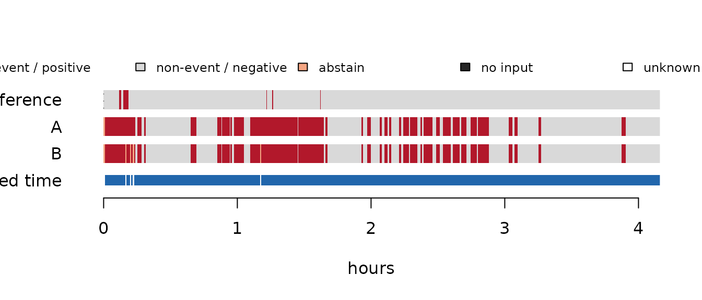

Comparing two monitoring policies on a real recording
Source:vignettes/comparing-monitors.Rmd
comparing-monitors.RmdThis vignette runs a complete comparison on record 04015 of the MIT-BIH Atrial Fibrillation Database (Moody and Mark 1983; PhysioNet, Open Data Commons Attribution License 1.0), which ships with the package as annotation files. The detector input is the database’s unaudited beat annotation stream, so no reference information reaches the detector.
library(timeledger)
ext <- function(f) system.file("extdata", f, package = "timeledger")
hea <- read_wfdb_header(ext("04015.hea"))
atr <- read_wfdb_ann(ext("04015.atr"))
qrs <- read_wfdb_ann(ext("04015.qrs"))
beats <- wfdb_beats(qrs, hea$fs)
c(fs = hea$fs, hours = hea$n_samples / hea$fs / 3600, beats = nrow(beats),
last_beat_hours = max(beats$time) / 3600)
#> fs hours beats last_beat_hours
#> 250.000000 10.228622 44005.000000 9.999934Beats stop at 10.0 hours here, roughly 14 minutes short of the end of the signal. We mark that tail as unavailable input in the observation table, so it is not scored as “no AF”.
Reference
ref <- wfdb_rhythm_intervals(atr, "04015", hea$fs, hea$n_samples)
head(ref)
#> record start end start_sample end_sample label
#> 1 04015 0.000 0.120 0 30 (unlabelled)
#> 2 04015 0.120 410.336 30 102584 (N
#> 3 04015 410.336 478.416 102584 119604 (AFIB
#> 4 04015 478.416 487.092 119604 121773 (N
#> 5 04015 487.092 488.776 121773 122194 (AFIB
#> 6 04015 488.776 533.392 122194 133348 (N
table(ref$label)
#>
#> (AFIB (N (unlabelled)
#> 7 8 1The few samples before the first rhythm annotation have no stated
rhythm and are labelled "(unlabelled)"; we treat them as
unknown.
A small RR-irregularity detector with two operating policies
A 64-beat window is scored every 8 beats from past beats only. The window is called AF when the normalised RMSSD of its RR intervals exceeds 0.1. Policy B additionally abstains when more than 5% of the window’s RR intervals are implausible (outside 0.3 to 2 s). These are two policies of one detector, written for this vignette; they are not a validated AF detector.
bt <- beats$time
rr <- diff(bt)
ends <- seq(64, length(rr), by = 8)
stat <- t(vapply(ends, function(e) {
x <- rr[(e - 63):e]
c(nrmssd = sqrt(mean(diff(x)^2)) / mean(x),
implausible = mean(x < 0.3 | x > 2))
}, numeric(2)))
resp_a <- ifelse(stat[, "nrmssd"] > 0.1, "positive", "negative")
resp_b <- ifelse(stat[, "implausible"] > 0.05, "abstain", resp_a)
T_end <- hea$n_samples / hea$fs
pred <- rbind(
tl_from_windows("04015", "A", decided_at = bt[ends + 1], response = resp_a,
until = max(bt)),
tl_from_windows("04015", "B", decided_at = bt[ends + 1], response = resp_b,
reason = ifelse(resp_b == "abstain", "implausible RR", NA),
until = max(bt)))
obs <- data.frame(record = "04015", start = c(0, min(bt), max(bt)),
end = c(min(bt), max(bt), T_end),
status = c("unavailable", "available", "unavailable"),
reason = c("beats not started", NA, "beat stream ended"))Ledger, metrics and comparison
rec <- tl_records("04015", 0, T_end, fs = hea$fs, n_samples = hea$n_samples)
led <- tl_ledger(rec, ref, pred, observation = obs, event = "(AFIB",
unknown = "(unlabelled)", missing = "abstain")
all(tl_check(led)$ok)
#> [1] TRUE
summary(led, by = c("response"))
#> detector response duration share
#> 3 A negative 26886.208 0.730146343
#> 7 A positive 9071.648 0.246357932
#> 5 A no_input 823.520 0.022364259
#> 1 A abstain 41.664 0.001131466
#> 4 B negative 26886.208 0.730146343
#> 8 B positive 8605.716 0.233704659
#> 6 B no_input 823.520 0.022364259
#> 2 B abstain 507.596 0.013784739
cmp <- tl_compare(led, c("A", "B"), policy = "one_to_one",
min_episode_time = 30)
cmp$table[cmp$table$metric %in% c("answer_coverage", "answered_sensitivity",
"full_capture", "episode_sensitivity",
"false_alarms_per_known_hour",
"burden_diff_pp"), ]
#> metric own_A own_B shared_A shared_B
#> 1 answer_coverage 0.9765075 0.9638541 1.0000000 1.0000000
#> 3 answered_sensitivity 0.9985668 0.9983698 0.9983698 0.9983698
#> 5 full_capture 0.9985668 0.8776914 0.9983698 0.9983698
#> 7 episode_sensitivity 0.5000000 1.0000000 0.5000000 1.0000000
#> 9 false_alarms_per_known_hour 7.0390941 8.0167461 7.3030698 8.3173851
#> 14 burden_diff_pp 24.5687952 23.6593429 23.6593429 23.6593429
cmp$discarded[, c("detector", "known_time_discarded", "event_time_discarded",
"episodes_discarded")]
#> detector known_time_discarded event_time_discarded episodes_discarded
#> 1 A 1330.996 28.676 0
#> 2 B 1330.996 28.676 0Restricting both policies to the time when both answered gives one
comparison; reporting each on its own answered time and on the full
period gives the others. The discarded table states what
the shared comparison leaves out.
Look at the time behind the numbers
# The shared ledger has the same rows as `led`; its reference-known rows are
# the time used by the shared comparison.
plot(led, from = 0, to = 4 * 3600, time_scale = 3600, xlab = "hours",
include = list(`shared time` = cmp$shared_ledger$reference != "unknown"))
m <- cmp$own_match
fa <- m$alarms[m$alarms$detector == "B" & m$alarms$status == "false", ]
head(fa[, c("alarm_id", "start", "end", "positive_time")])
#> alarm_id start end positive_time
#> 79 04015:B:a003 740.624 779.584 38.960
#> 80 04015:B:a004 820.720 857.544 36.824
#> 81 04015:B:a005 912.008 1021.220 109.212
#> 82 04015:B:a006 1092.208 1139.896 47.688
#> 83 04015:B:a007 2339.996 2492.212 152.216
#> 84 04015:B:a008 3066.616 3109.776 43.160
tl_explain(led, m, alarm = fa$alarm_id[1])[, c("start", "end", "reference",
"response", "issued_at")]
#> start end reference response issued_at
#> 1 740.624 746.716 nonevent positive 740.624
#> 2 746.716 751.948 nonevent positive 746.716
#> 3 751.948 757.972 nonevent positive 751.948
#> 4 757.972 763.296 nonevent positive 757.972
#> 5 763.296 769.276 nonevent positive 763.296
#> 6 769.276 774.508 nonevent positive 769.276
#> 7 774.508 779.584 nonevent positive 774.508WFDB epicmp conventions
wfdb_epicmp_af() reproduces the AF statistics of the
WFDB program epicmp for the conventions documented in its
help page. It needs the responses as a WFDB test annotation file, which
cannot represent abstention, so abstained time is written as non-AF.
tmp <- tempfile(fileext = ".tst")
write_wfdb_rhythm(tmp, pred[pred$detector == "B", ], fs = hea$fs)
str(wfdb_epicmp_af(atr, read_wfdb_ann(tmp), n_samples = hea$n_samples,
fs = hea$fs))
#> List of 12
#> $ STP : int 7
#> $ FN : int 0
#> $ PTP : int 5
#> $ FP : int 82
#> $ ref_overlap : num 52055
#> $ ref_duration : num 59309
#> $ test_overlap : num 52055
#> $ test_duration: num 2086906
#> $ ESe : int 100
#> $ EPP : int 6
#> $ DSe : int 88
#> $ DPP : int 2Uncertainty
With many records, resample subjects, not seconds or episodes:
cb <- tl_contributions(led, cmp$own_match)
tl_bootstrap(cb, c("full_capture", "false_alarms_per_known_hour"), B = 2000)A single record has one subject, so the bootstrap is not run here.